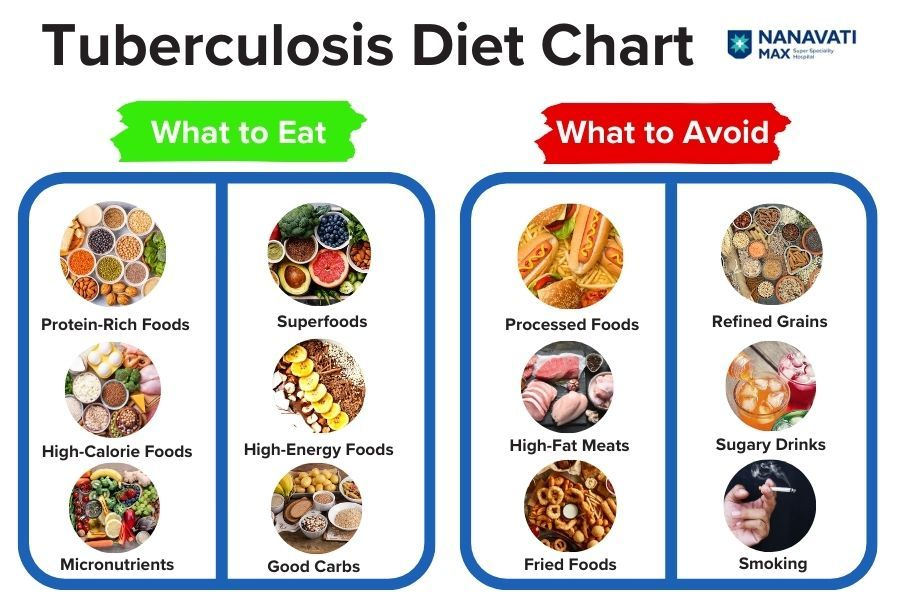

PRECAUTIONS

Administrative Controls

Environmental Controls



Activities like walking, cycling, or swimming at a low intensity can improve cardiovascular health and lung capacity. These exercises can be gradually increased in duration and intensity as fitness improves.